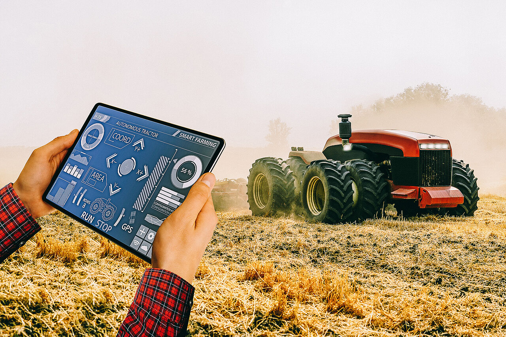

Lösungsansätze · Thema 3
Maschinen
Wie moderne Technologie die Landwirtschaft schonender, präziser und nachhaltiger macht.
Wie moderne Technologie die Landwirtschaft schonender, präziser und nachhaltiger macht.
Landmaschinen sind das Rückgrat der modernen Landwirtschaft – aber auch eine der größten Quellen für CO₂-Emissionen, Bodenverdichtung und Ressourcenverbrauch. Neue Technologien bieten konkrete Wege, diesen Fußabdruck drastisch zu reduzieren, ohne auf Effizienz zu verzichten.
_________________________
Um fossile Energieträger zu ersetzen, werden zunehmend alternative Antriebe entwickelt. Elektrotraktoren arbeiten emissionsfrei, sind leiser und verursachen geringere Betriebskosten. Sie eignen sich besonders für kleinere Betriebe sowie Arbeiten im Stall oder Gewächshaus.
Für größere Maschinen gilt die Brennstoffzelle als vielversprechende Lösung. Wasserstoffbetriebene Traktoren ermöglichen lange Einsatzzeiten bei gleichzeitig null CO₂-Ausstoß. Damit stellen sie eine wichtige Alternative zu Benzin, Gas und Öl dar.

Moderne Landwirtschaft setzt auf Präzisionssysteme, um Ressourcen gezielt einzusetzen. GPS-gesteuerte Traktoren fahren exakt Spur an Spur und vermeiden Überlappungen. Dadurch werden Treibstoffverbrauch sowie der Einsatz von Dünger und Pflanzenschutzmitteln deutlich reduziert.
Sensoren analysieren in Echtzeit Boden- und Pflanzenzustände. So wird nur dort gearbeitet, wo es wirklich notwendig ist. Diese datenbasierte Bewirtschaftung steigert die Effizienz und reduziert gleichzeitig Umweltbelastungen.

Automatisierte Systeme und Feldroboter übernehmen zunehmend Aufgaben in der Landwirtschaft. Kleine Roboter können Unkraut mechanisch entfernen, Pflanzen überwachen oder Erträge erfassen – ganz ohne schwere Maschinen.
Auch Drohnen und KI-gestützte Systeme analysieren große Flächen effizient. Sie erkennen frühzeitig Probleme wie Schädlingsbefall oder Trockenstress und ermöglichen gezielte Eingriffe. Das spart Ressourcen und schützt den Boden.

Jede Überfahrt mit Maschinen belastet den Boden und führt zu Verdichtung. Moderne Anbaumethoden wie Direkt- und Mulchsaat reduzieren die Anzahl der notwendigen Fahrten deutlich.
Durch den Verzicht auf Pflügen bleibt die Bodenstruktur erhalten, Wasser wird besser gespeichert und das Bodenleben geschützt. Gleichzeitig sinkt der Energieverbrauch der Maschinen erheblich.

Elektro- und Wasserstoffantriebe ersetzen Dieselmotoren und reduzieren Treibhausgasemissionen deutlich.
Leichtere Maschinen und präzise Fahrspuren verhindern Bodenverdichtung und schützen das Bodenleben.
Sensordaten und KI sorgen dafür, dass Dünger und Pestizide nur dort eingesetzt werden, wo es nötig ist.
Smarte Technologien helfen Betrieben, wettbewerbsfähig zu bleiben und gleichzeitig ökologisch zu wirtschaften.